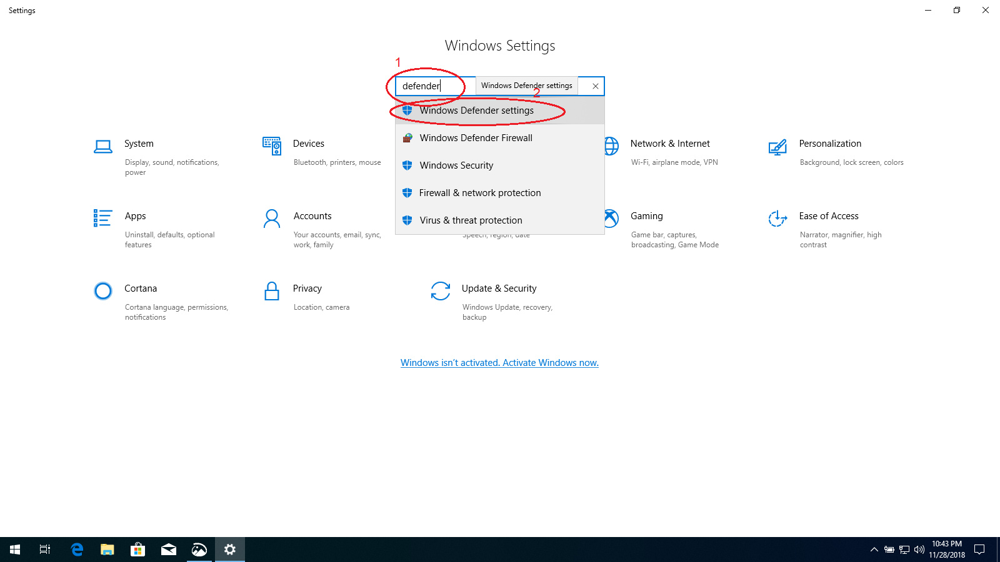
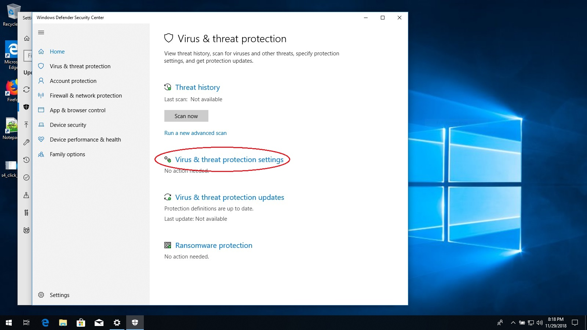
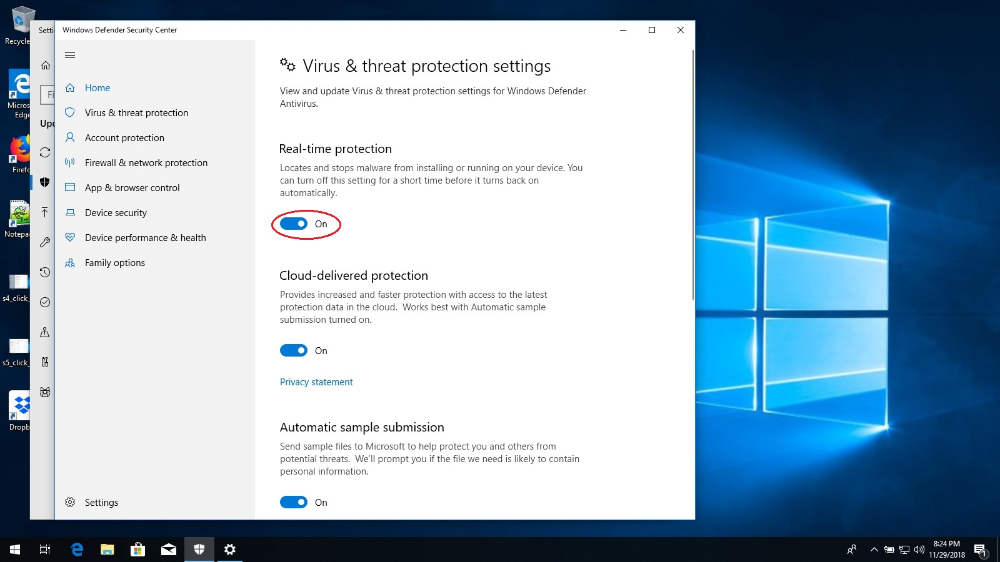

Enabling Windows Defender
Windows defender is a security program that is included for free with Windows. It can protect your computer from
viruses and other malicious programs, but only if it is turned on. Windows defender is currently disabled.
Follow the steps below to enable it.
-
First, click on the start button and then the settings gear.

-
When the Settings app opens, click on the "Search" box at the top and type in "defender".
-
Below the search box, the words "Windows Defender Settings" will appear. Click these words.

-
Look for and click on the words "Virus and threat protection" next to a picture of a shield.

-
A new window will open with the title "Windows Defender Security Console".
Click on the words "Virus & threat protection settings".

-
Look for the text "Real-time protection" with a switch under it.
-
Click on the switch so that it changes to blue and has the text "On".

-
Close the "Windows Defender Security Console" and the Settings app.
Congratulations, Windows Defender is now protecting your computer!